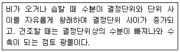
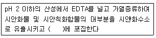
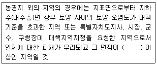
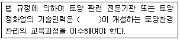

토양환경기사 (2016-10-01 기출문제)
1과목: 토양학개론
1. 중금속 특성의 세기가 큰 것부터 알맞게 나열된 것은?
- Hg＞Cd＞Ni＞Pb＞Cr＞Li
- Hg＞Ni＞Cd＞Pb＞Cr＞Li
- Cd＞Hg＞Ni＞Pb＞Cr＞Li
- Cd＞Ni＞Hg＞Pb＞Cr＞Li
(정답률: 72%)

2. 단위체적의 대수층 내에 저유된 지하수와 대수층으로부터 외부로 뽑아낼 수 있는 지하수량과의 비를 나타내는 것은?
- 비양수율(Specific Reuse)
- 간극률(Posrosity)
- 비산출률(Specific Yield)
- 비보유율(Specific Retention)
(정답률: 88%)
3. 중금속이 인테에 미치는 영향에 관한 내용으로 틀린 것은?
- Cd는 식물에 쉽게 흡수되고 먹이사슬을 통하여 주로 감염된다.
- 오염토양 내 Pb는 일반적으로 Cd보다 매우 낮은 농도로 존재한다.
- Hg 독성에 따른 대표적 질병은 미나마타병이다.
- As에 의한 영향은 섭취하는 비소의 농도와 비소의 화학적 형태에 따라 다르다.
(정답률: 90%)
4. 다음은 어떤 토양 광물에 대한 설명인가?

- 비팽창 격자형 광물
- 팽창 격자형 광물
- 규산 사면체 광물
- 알루미늄 팔면체 광물
(정답률: 84%)
5. 광산 활동에 의한 주변 농경지의 오염에 관련된 사항으로 가장 거리가 먼 것은?
- 일반적으로 광산배수의 pH는 강알칼리임
- 농경지 오염은 주로 방치된 광미, 광폐석에 기인됨
- 아연광산의 경우 제련과정에서 카드뮴이 부산물로 생산됨
- 중금속이 함유된 농업용수를 이용함으로써 농경지가 오염됨
(정답률: 84%)
6. 토양 중 인(P)에 대한 설명으로 옳은 것은?
- 토양에 따라 차이가 많지만 총인 중 유기태인이 5~10%를 차지한다.
- 식물은 토양용액으로부터 H2PO4-이나, HPO42-과 같은 무기인산 형태의 인을 흡수한다.
- 유기태인은 Ca, Fe 및 Al과 결합된 형태 그리고 토양광물의 표면에 흡착된 형태로 존재한다.
- 토양용액 중 인의 농도는 작물의 인요구량에 비해 높고, 이동성이 크다.
(정답률: 65%)
7. 1:1형 광물로서 카올리나이트와 같은 Si층 사이에 물 분자층 하나가 끼어 있어 기저면 간격이 넓어져 있으며 이를 가열하면 물이 비가역적으로 빠져 나가는 것은?
- 몬모릴로나이트(Montmorillonite)
- 카올린(Kaolin)
- 일라이트(lllite)
- 할로이사이트(Halloysite)
(정답률: 64%)
8. 유류오염물질의 성질에 대한 설명으로 가장 거리가 먼 것은?
- 윤활유에는 다환고리방향족탄호수소(PAHs)가 다향 함유되어 있다.
- 지하저장탱크로부터 발생하는 유류의 오염은 누출이나 쏟아짐에 기인된다.
- 휘발유는 항공유보다 탄소 수가 더 많은 물질로 구성되어 있다.
- 디젤유가 지하대수층에 도달하면 DNAPL 층을 형성한다.
(정답률: 65%)
9. 토양 내에 미생물 줄 세균에 비해 일반적으로 내산성이 강하고 산성 토양에서 유기물 분해의 중요한 작용을 담당하며 토양 중에서 리그닌을 주로 분해하는 것은?
- 빙선균
- 세균
- 사상균
- 조류
(정답률: 86%)
10. 토양에 사용되는 관개용수의 수질분석결과 Na+ 150mg/L, Ca2+ 170mg/L, Mg2+ 155mg/L, K+ 110mg/L일 때 나트륨 흡착비는?
- 약 0.86
- 약 1.22
- 약 1.99
- 약 2.82
(정답률: 56%)
11. 토양오염의 특징에 대한 설명으로 틀린 것은?
- 토양오염은 오염물질의 특성과 오염지역 토양 특성에 의해 영향을 받는다.
- 토양오염은 오염의 발생과 오염에 따른 문제 발생 간에는 시간차를 두고 있다.
- 토양오염은 토양에 국한되어 다른 매체에 대한 2차 오염을 유발하지 않는다.
- 토양오염의 확산 및 처리에 영향을 미치는 중요 요소로는 투수계수, 지하수위 등이 있다.
(정답률: 86%)
12. 우리나라 토양의 일반적인 특징에 대한 설명으로 가장 거리가 먼 것은?
- 낮은 유기물 함량
- 사질(모래) 토양
- 낮은 염기교환 용량
- 중성 토양
(정답률: 85%)
13. 해안 섬에서 염수 침입을 추정할 수 있는 이론은?
- Cooper-Jacob 이론
- Neuman-Whitherspoon 이론
- Cooper-Bredehoeft-Papadopulos 이론
- Dupuit-Gyben-Herzberg 이론
(정답률: 53%)
14. 특이적 공생관계를 맺는 질소고정균과 숙주식물의 군을 동일교호접종군(Cross lnoculation Group) 이라 한다. 다음 중 근류균과 공생 콩과 식물을 바르게 짝지은 것은?
- Rhizobium lupini-알팔파
- Rhizobium leguminosarum-클로버
- Sinnorhizobim meliloti-완두
- Bradyrhizobium japonicum-땅콩
(정답률: 60%)
15. 충적대수층의 공극률이 0.29이고 비산출률이 0.14일 때 비보유율(Specific Retention)은?
- 0.15
- 0.48
- 2.07
- 0.⑤
(정답률: 89%)
16. 산성비가 토양에 미치는 영향을 설명한 내용으로 가장 거리가 먼 것은?
- 토양으로부터 알루미늄의 용해도가 증가된다.
- 칼슘, 마그네슘 등 염기의 용출이 가속화된다.
- 용해된 알루미늄은 식물에만 영향을 준다.
- 토양의 산성화가 촉진된다.
(정답률: 86%)
17. 미국 농무부 토성분류체계에 의한 점토(Clay)와 미사(Silt)를 구분하는 토양입자의 크기(m)는?
- 0.002
- 0.02
- 0.⑤
- 0.1
(정답률: 75%)
18. 세계 토양목의 구분 중 Histosol 토양은?
- 미발달 토양
- 유기질 늪지 도양
- 건조지역의 토양
- 화산재 토양
(정답률: 84%)
19. 지하수 내로 유입된 오염물질의 이동을 지체(Retardation)시키는 인자가 아닌 것은?
- 휘발
- 생분해
- 흡착
- 용탈
(정답률: 74%)
20. 하수 슬러지의 토양 투기로 인해 토양이 아연 100ppm, 니켈 50ppm, 구리 100ppm으로 오염되었다. 이 토양의 독성을 상대적으로 평가하는 지표로서 아연등량계수(ppm)는?
- 300
- 500
- 700
- 900
(정답률: 50%)
2과목: 토양 및 지하수 오염조사기술
21. 크로마토그래피를 사용한 정량법 중에서 시료전처리, 시약취급, 시료 주입 등에서 발생할 수 있는 오차를 최소화시키기 위해 사용하는 방법은?
- 외부표준법
- 표준물질첨가법
- 외삽법
- 내부표준법
(정답률: 82%)
22. 일반지역(농경지)의 토양 시료 채취방법 중 시료채취지점 선정에 관한 내용으로 옳은 것은?
- 대상지역 내에서 나선형으로 5~10개 지점
- 대상지역 내에서 지그재그형으로 5~10개 지점
- 대상지역에서 대표치를 구할 수 있는 1개 지점
- 대상지역의 중심 지점과 주변 4방위 총 5개 지점
(정답률: 84%)
23. 토양오염공정시험 방법상 불소 정량방법으로 적절한 것은?
- 원자흡수분광광도법
- 자외선/가시선 분광법
- 기체크로마토그래피
- 유도결합플라스마-원자발광분광법
(정답률: 82%)
24. 기체크로마토그래피로 PCB를 측정할 때 주로 사용하는 검출기는?
- 전자포착검출기(ECD)
- 불꽃이온화검출기(FID)
- 광이온화검출기(PID)
- 열전도도검출기(TCD)
(정답률: 79%)
25. 토양의 pH를 측정하기 위해서 토양과 산을 포함하는 정제수의 비율로 적절한 것은? (단, 토양의 밀도(비중)는 1.0이 아님)
- 토양시료의 무게에 5배의 정제수를 사용
- 토양시료의 부피의 5배의 정제수를 사용
- 토양시료의 무게에 2배의 정제수를 사용
- 토양시료의 부피에 2배의 정제수를 사용
(정답률: 70%)
26. 유도결합플라즈마 발광광도계에 대한 설명으로 틀린 것은?
- 아르곤을 플라즈마 가스로 이용한다.
- 동시에 다성분의 분석은 불가능하다.
- 분석 성분의 농도는 방출되는 광선의 세기에 비례한다.
- 여기된 원자가 바닥상태로 이동할 때 방출하는 광선을 이용하여 측정한다.
(정답률: 76%)
27. 토양 중 시안(이온전극법) 측정에 관한 설명으로 틀린 것은?
- 토양 중 시안의 정량한계는 0.5mg/kg이다.
- 토양을 pH4 이하의 산성으로 조절 후 시안 이온전극과 비교전극을 사용하여 전위를 측정한다.
- 시안화합물을 측정할 때 방해물질들은 증류하면 대부분 제거된다.
- 잔류염소가 함유된 시료는 잔류염소 20mg당 아비산나트륨용액(10%) 0.7mL를 넣어 제거한다.
(정답률: 67%)
28. 1몰(M) 황산(H2SO4) 용액은 몇 노말(N) 용액인가? (단, H2SO4분자량=98, 당량=49)
- 0.5 노말(N)
- 1.0 노말(N)
- 2.0 노말(N)
- 4.0 노말(N)
(정답률: 70%)
29. 유기화합물 중 이피엔(EPN)을 기체크로마토그래프법으로 분석하고 내부표준법으로 정량하고자 한다. 내부표준물질 5ppm을 사용하여 검정곡선식을 작성한 결과 Y=1.5×0.5의 식을 얻을 수 있었다. 실제 시료를 분석한 결과 내부표준물질이 5ppm일 때 면적이 1,000으로 나타났고 이피엔의 면적은 2,000으로 나타났다. 이피엔의 농도(ppm)는? (단, Y : 이피엔과 내부표준물질의 면적비, X : 이피엔과 내부표준물질의 농도비임)
- 1
- 2.5
- 5.0
- 10.0
(정답률: 50%)
30. 중금속을 분석하는 데 사용되는 자외선/가시선 분광법의 연결이 맞는 것은?
- 시안-디페닐카르바지드법
- 구리-디에틸디티오카르바민산법
- 6가 크롬-디메틸글리옥심법
- 비소-피리딘ㆍ피라졸론법
(정답률: 57%)
31. 저비점 석유를 중에 다량 함유되어 있는 벤젠, 툴루엔, 에틸벤젠, 크실렌(BTEX)의 측정에 적용하는 기체크로마토그래프 검출기의 종류가 아닌 것은?
- FID
- PID
- ECD
- GC/MS
(정답률: 58%)
32. 토양의 수분함량에 관한 설명으로 옳지 않은 것은?
- 시료를 보관해야 할 경우 미생물에 의한 분해를 방지하기 위해0~4℃로 보관한다.
- 돌, 나무 등 눈에 보이는 협잡물 등은 제거한 후 시험해야 한다.
- 시료를 1⑤~110℃에서 4시간 이상 건조한다.
- 토양 중 수분을 0.01%까지 측정한다.
(정답률: 80%)
33. 일반지역에서 채취하는 토양의 시료용기에 기재하여야 하는 내용이 아닌 것은?
- 토양깊이
- 채취위치
- 오염 정도
- 채취자
(정답률: 83%)
34. 저장물질이 있는 누출검사대상시설-기상부의 시험법에서 사용하는 검사기기 및 기구 중 감압장치(액체를 뽑아내는 방식 기준)에 해당되지 않는 것은?
- 이젝터
- 송유설비
- 가변식 펌프
- 고체 급유설비
(정답률: 73%)
35. 토양 내 시안을 자외선/가시선 분괄법으로 측정할 때에 관한 내용으로 ( )안에 옳은 내용은?

- 클로라민 T 용액
- 수산화나트륨 용액
- 피리딘 피라졸론 용액
- 황산제이철암모늄 용액
(정답률: 68%)
36. 검량선에서 얻어진 등유성분의 검출양이 1550.5ng이었다. 토양 중 TPH(석유계총탄화수소)농도(mg/kg)는? (단, 수분 보정한 토양무게 26.5g, 용매의 최종액량 2mL, 검액의 주입량 2μL)
- 58.5
- 68.7
- 48.5
- 75.8
(정답률: 58%)
37. 토양오염공정시험 방법에서 분석대상 유기인계 화합물로 규정되지 않은 성분은?
- 알드린
- 이피엔
- 메틸디메톤
- 펜토에이트
(정답률: 59%)
38. 석유계 총탄화수소를 분석하기 위한 추출방법으로 옳은 것은? (단, 기체크로마토그래피 기준)
- 가온 추출법
- 자기장 추출법
- 적외선 추출법
- 초음파 추출법
(정답률: 73%)
39. 유리전극법을 활용한 수소이온농도 측정에 관한 설명으로 틀린 것은?
- pH를 0.1까지 측정한다.
- 유리전극은 일반적으로 산화 및 환원성 물질들에 의해 간섭을 받는다.
- 토양 중 염류의 농도가 높아지면 pH 값이 낮아지는 경우가 있다.
- 토양을 오랫동안 방치하면 미생물의 작용으로 탄산가스가 발생하여 pH가 낮아질 수 있다.
(정답률: 77%)
40. 지하매설 저장탱크의 끝단이 3m에 위치한 시설에서 저장탱크로부터 수평으로 1m 떨어져 시료를 채취할 경우 채취 깊이(m)는?
- 3
- 3.5
- 4
- 4.5
(정답률: 77%)
3과목: 토양 및 지하수 오염정화 기술
41. 열탈착기술의 기본적인 제어장치가 아닌 것은?
- 분진 제거를 위한 사이클론과 백필터
- 잔존 유기물 제거를 위한 활성탄
- 산성 증기 제거를 위한 벤투리 세정기
- 탈수를 위한 필터프레스
(정답률: 62%)
42. 지하수오염 확산 방지를 위한 차단시설이 아닌 것은?
- 슬러리 월
- 브이 와이어
- 그라우팅
- 시트파일
(정답률: 76%)
43. 총 3기의 유류저장탱크가 설치된 탱크박스에서 2기의 15,000L와 1기의 20,000L 저장 탱크를 제거하였다. 탱크박스는 부피는 500m3이며 박스 내 토양이 오염되었다. 탱크박스 내 오염토양의 굴토 양(ton)은? (단, 토량환산계수=1.1, 굴토 전 원지반의 밀도=1.8g/cm3, 굴토 후 오염토양의 밀도=1.64g/cm3)
- 750.4
- 788.4
- 811.8
- 926.1
(정답률: 52%)
44. 지중 생물학적 처리 공정의 4가지 반응 메커니즘에 속하지 않는 것은?
- 공동대사
- 수화반응
- 호기반응
- 혐기반응
(정답률: 65%)
45. 토양세척의 장ㆍ단점에 대한 설명으로 틀린 것은?
- 무기물과 유기물을 동시에 처리할 수 있다.
- 토양 유기물 함량이 높을수록 토양세척효율이 높아진다.
- 비교적 다양한 오염토양 농도에 적용 가능하며 오염토양의 부피를 급격히 줄일 수 있다.
- 선별된 미세 오염토양 및 오염유출수는 부가적인 처리가 필요하다.
(정답률: 70%)
46. 열탈착 기술에서 오염물질의 특성에 따른 탈착속도에 대한 설명으로 틀린 것은?
- 유기물질의 분자량이 클수록 탈착속도가 빠르다.
- 토양층이 깊어질수록 탈착속도는 감소한다.
- 유기물질의 휘발성이 작을수록 탈착속도가 느리다.
- 비공극성 입자의 경우 탈착속도는 초기에 크고 빠르게 일어난다.
(정답률: 86%)
47. 효율적인 토양 세척용 계면활성제 선택 시 고려사항으로 가장 거리가 먼 것은?
- 용해도
- 전도성
- 흡착성
- 생분해성
(정답률: 62%)
48. 생물학적 처리 시 일반적으로 대상 오염물질이 난분해성을 갖는 성질이 아닌 것은?
- 할로겐화된 화합물
- 가지구조가 많은 화합물
- 물에 대한 용해도가 낮은 화합물
- 원자의 전하차가 작은 화합물
(정답률: 88%)
49. 타 기술에 비하여 유류 오염물질을 빠른 시간 내에 분해하여 처리할 수 있는 화학적 산화법 장ㆍ단점으로 옳지 않은 것은?
- 오염물질을 원위치에서 정화할 수 있다.
- 토양 중의 구성물질과 반응하여 산화제의 소요량이 증가할 수 있다.
- 펜톤 산화 시에는 부산물이 발생되지 않는다.
- 투수성이 낮은 토양에서는 오염물질과 산화제의 접속이 쉽지 않다.
(정답률: 78%)
50. 위해성(Risk)에 관한 내용으로 틀린 것은?
- 오염물질에 노출됨으로써 수용체가 영향을 받을 개연성으로 정의된다.
- 확률적인 개념이다.
- 일반적 위해성은 배경위해성을 말한다.
- 독성과 노출의 함수이다.
(정답률: 74%)
51. 토양증가추출법으로 오염토양을 복원하는 경우, 단일 추출정으로부터 배출되는 가솔린의 평균농도가 추출공기 1.0L당 1.0mg이고, 하루에 100m3의 공기가 추출된다. 오염토양내에 누출된 가솔린의 총량이 5kg이고, 누출된 가솔린이 모두 증기추출로만 제거된다고 가정한다면 오염 가솔린을 모두 제거하는 데 소요되는 시간(day)은?
- 10
- 25
- 50
- 100
(정답률: 54%)
52. 오염지반의 조사방법 중 지표 물리탐사 방법에 해당되는 것은?
- 시추조사
- 공중 원격탐사
- 관입조사
- 전기탐사
(정답률: 58%)
53. 원위치 생물학적 복원(In-situ bioremediation)에 대한 설명으로 맞는 것은?
- 산소공급용 과산화수소 자체 농도가 10mg/L 이상일 때 미생물에 독성을 나타낸다.
- 수리전도도 1×10-4cm/s 이하 지층에서는 기술의 적용이 바람직하지 않다.
- 영양물질의 침전은 미생물의 활성을 높여 처리효율을 향상시킨다.
- 수소성이 강한 유기오염물질은 토양에 흡착되어 미생물이 이용하기 쉽다.
(정답률: 54%)
54. 오염물질의 특성 중 유류의 생분해성이 높은 물질부터 낮은 물질 순으로 연결된 것은?
- 휘발유＞경유＞윤활유＞
- 경유＞윤활유＞휘발유
- 윤활유＞경유＞휘발유
- 경유＞휘발유＞윤활유
(정답률: 59%)
55. 양수 및 처리법(Pump and Treat)으로 오염된 지하수를 정화하고자 할 때에는 충분한 양수를 통하여 오염구간을 씻어내야 한다. 간단히 배취 플러시 모델(Batch Flush Model)을 적용하였을 때 정화목표 농도에 필요한 공극부피(Pore Volume=PV)의 수는? (단, 지연계수 R=1.5, 초기 오염물질 농도=15mg/L, 목표농도=1.5mg/L)
- 3.45
- 2.75
- 3.64
- 2.78
(정답률: 44%)
56. Pneumatic Fracturing 기술 개요로 옳은 것은?
- 수리전도도가 불량하고 과잉 압밀된 오염지반에 인위적인 틈을 만들어 압축공기를 주입함으로써 여타 지중정화기술 적용 시 오염물 처리 및 추출효율을 증대시킨다.
- 추출정을 설치하여 압력과 농도구배를 형성하고 추출정을 통하여 고압의 안정제를 주입함으로써 오염물의 추출효율을 증대시킨다.
- 수직 굴착으로는 오염물질에 대한 접근이 용이하지 않은 지반구조일 경우 수평 또는 일정 각도를 가지도록 굴착하여 오염물질을 효율적으로 처리한다.
- 오염지반에 오염물 용해도를 증대시키기 위한 첨가제를 함유란 고압의 물을 주입하여 토양 내 오염물을 추출하여 인위적인 틈을 형성시켜 토양의 통기성을 향상시킨다.
(정답률: 63%)
57. 고형화/안정화 기술에 대한 설명으로 틀린 것은?
- 포틀랜드시멘트를 이용한 고형화/안정화 기술은 PCBs에 적합하지 않다.
- 포졸란(Pozzolan)을 이용한 고형화/안정화 기술은 중금속 오염토양에 적합한 기술이다.
- 고형화는 비고형화 상태의 오염물질을 고형물로 바꾸어 물리적 상태를 변화시키는 것이다.
- 시멘트를 기초로한 고형화/안정화 기술은 혼합/양생을 통해 모노리스(Monolith)를 형성하게 된다.
(정답률: 59%)
58. 식물정화법에 대한 설명으로 가장 거리가 먼 것은?
- 식물정화법 중에서 식물에 의한 추출은 중금속이나 방사능 물질의 제거에 사용된다.
- 해바라기와 인도겨자는 식물에 의한 분해로 오염물질을 처리하는 데 적용되는 대표적인 식물이다.
- 식물에 의한 안정화에 적합한 식물은 대상오염에 대한 높은 내성이 있어야 한다.
- 식물에 의한 분해는 식물이 독성물질을 분해하는 효소를 분비하거나 또는 오염물질을 분해하는 데 중요한 역할을 담당하는 토양미생물에 필요한 영양분을 제공하여 분해활동을 활성화시킴으로써 오염물질을 무독성의 물질로 전환하는 원리이다.
(정답률: 73%)
59. 동전기정화기술(Electrokinetic method)의 특성과 적용성을 잘못 기술한 것은?
- 탄산화물 또는 적철석과 같은 광물이 다량 함유된 염기성 토양에서의 적용 효율이 높다.
- 토양을 굴착하지 않고 현장에 적용할 수 있는 기술이므로 현장상태를 유지하면서 오염 토양을 처리할 수 있다.
- 전기동력학적 처리 공정은 토양의 포화도라 무관하므로 포화하거나 불포화된 토양 모두에 적용이 가능하다.
- 현장에 적용할 때 암석이나 자갈 또는 금속성 이물질이 존재하면 전기에너지 및 제거 효율이 감소할 수 있다.
(정답률: 44%)
60. 바이오스파징 기술의 특징이 아닌 것은?
- 공기를 공급한다는 면에서 바이오벤팅과 유사하다.
- 투수계수가 10-3cm/s 이상에서 적용하는 것이 바람직하다.
- 대상부지의 지층이 균일해야 한다.
- Air Sparging 기술과는 미생물을 이용한다는 점에서 다르다.
(정답률: 54%)
4과목: 토양 및 지하수 환경관계법규
61. 토양환경평가를 위한 조사 구분 중 시료의 채취 및 분석을 통한 토양오염 여부를 조사하는 것은?
- 정밀조사
- 기초조사
- 정도조사
- 개황조사
(정답률: 62%)
62. 특정토양오염관리대상시설의 설치자가 특정토양오염관리대상시설별로 설치하여야 하는 토양오염 방지시설이 아닌 것은?
- 토양오염물질이 누출되지 아니하도록 하기 위하여 누출 방지성능을 가진 재질을 사용하거나 이중벽탱크 등 누출방지시설
- 누출된 오염물질의 위해성과 독성을 측정하는데 필요한 시설
- 지하에 매설되는 저장시설의 경우에는 토양오염물질이 누출되는 것을 감지하거나 누출 여부를 확인할 수 있는 측정기기 등의 시설
- 누출될 경우에 대비하여 오염 확산 방지 또는 독성 저감 등의 조치에 필요한 시설
(정답률: 63%)
63. 토양보전대책지역 지정표지판에 나타내어야 하는 내용으로 틀린 것은?
- 지정일자
- 지정범위
- 토양보전재책지역 내역
- 토양보전대책지역 안에서 제한되는 행위
(정답률: 54%)
64. 다음 중 토양오염도 검사수수료가 가장 저렴한 검사 항목은?
- 불소
- 시안
- 유기인
- 아연
(정답률: 62%)
65. 토양보전대책지역의 지정기준으로 ( )안에 옳은 내용은?

- 1만 제곱미터
- 2만 제곱미터
- 3만 제곱미터
- 5만 제곱미터
(정답률: 68%)
66. 지하수보전구역, 상수원보호구역에 설치된 특정토양오염관리대상시설의 토양오염 검사주기에 관한 설명으로 맞는 것은?
- 매년 토양오염도 검사를 받아야 함
- 저장시설 설치 후 5년까지는 최초 검사 후 3년 및 5년이 되는 해에 각각 1회
- 저장시설 설치 후 5년에서 15년까지의 기간 중에는 매 2년에 1회
- 저장시설 설치 후 15년이 지난 때에는 매년 1회
(정답률: 73%)
67. 특별자치도지사, 시장, 군수, 구청장은 환경부형으로 정하는 바에 따라 특정토양오염관리대상시설의 설치자에게 감독상 필요한 자료의 제출을 명할 수 있으며, 소속 공무원으로 하여금 특정 토양오염관리대상시설에 출입하여 토양오염 방지시설의 설치, 토양오염검사 및 그 결과의 보전 여부 등을 검사하게 할 수 있다. 이에 따른 공무원의 출입ㆍ검사를 거부ㆍ방해 또는 기피한 자에 대한 과태료 부과 기준은?
- 100만원 이하
- 200만원 이하
- 300만원 이하
- 500만원 이하
(정답률: 66%)
68. 지하수를 공업용수로 이용하는 경우는 지하수 수질기준으로 틀린 것은?
- pH : 5.0~9.0
- 질산성 질소 : 80mg/L
- 염소이온 : 500mg/L 이하
- 수은 : 0.001mg/L 이하
(정답률: 54%)
69. 기술인력의 교육에 관한 내용으로 ( )안에 알맞은 내용은?

- 국립환경과학원장
- 국립환경인력개발원장
- 시ㆍ도 보건환경연구원장
- 지방환경청 또는 유역환경청장
(정답률: 79%)
70. 오염토양 개선사업의 종류에 대한 설명으로 틀린 것은?
- 오염된 수로의 준설사업
- 오염물질의 흡수력이 강한 식물식재사업
- 오염개선지역 선정 및 평가 사업
- 오염토양의 위생적 매립ㆍ정화사업
(정답률: 66%)
71. 보관, 운반 및 정화 등의 과정에서 오염토양을 누출ㆍ유출시킨 자에 대한 벌칙 기준은?
- 500만 원 이하의 벌금
- 1천만 원 이하의 벌금
- 1년 이하의 징역 또는 1천만 원 이하의 벌금
- 2년 이하의 징역 또는 2천만 원 이하의 벌금
(정답률: 78%)
72. 환경부장관이 수립하도록 되어 있는 토양보전기본계획에 반드시 포함되어야 할 사항으로 틀린 것은?
- 토양오염의 현황, 진행상황 및 장래 예측
- 토양오염의 방지를 위한 재원 조달계획
- 토양오염의 방지에 관한 사항
- 토양보전에 관한 시책방향
(정답률: 68%)
73. 환경부장관은 토양보전을 위하여 몇 년마다 토양보전에 관한 기본계획을 수립ㆍ시행하여야 하는가?
- 20년
- 15년
- 10년
- 5년
(정답률: 76%)
74. 환경부장관 또는 시장ㆍ군수는 지하수 수질검사 결과 수질기준에 적합하지 아니한 경우에는 수질개선 등 조치를 명할 수 있는데, 다음 중 조치명령 사항에 해당하지 않는 것은?
- 지하수의 정수처리
- 지하수 개발시설의 보완
- 지하수 이용시설의 보완
- 지하수오염관측정의 설치 및 정기적인 수질 측정
(정답률: 39%)
75. 속임수나 그 밖의 부정한 방법으로 토양 관련 전문기관의 지정을 받거나 토양정화업의 등록을 한 자에 대한 벌칙 기준은?
- 1년 이하의 징역 또는 1천만 원 이하의 벌금
- 2년 이하의 징역 또는 2천만 원 이하의 벌금
- 3년 이하의 징역 또는 3천만 원 이하의 벌금
- 5년 이하의 징역 또는 5천만 원 이하의 벌금
(정답률: 56%)
76. 측정망설치계획에 포함되어야 하는 사항으로 틀린 것은?
- 측정망 설치시기
- 측정말 배치도
- 측정대상 오염물질
- 측정지점의 위치 및 면적
(정답률: 67%)
77. 토양오염조사기관기관이 수행하는 업무에 해당하지 않는 것은?
- 누출조사 및 검사
- 토양정밀조사
- 토양정화의 검증
- 토양오염도 검사
(정답률: 44%)
78. 지하수의 수질기준 항목 중 특정유해물질에 포함되지 않는 항목은? (단, 지하수를 생활용수로 이용하는 경우)
- TPH
- 비소
- 톨루엔
- TCE
(정답률: 47%)
79. 토양오염의 피해에 관한 무과실책임에 대한 설명으로 틀린 것은?
- 토양오염이 천재지변으로 인하여 발생한 경우에는 당해 오염원인자는 그 피해를 배상하지 아니한다.
- 오염원인자가 2인 이상으로서 어느 오염원인자에 의하여 피해가 발생한 것인지 알 수 없을 때에는 각 오염원인자가 연대하여 배상하고 오염된 토양을 정화하여야 한다.
- 토양오염으로 인하여 피해가 발생한 경우 그 오염을 발생시킨 자는 그 피해를 배상하고 오염된 토양을 정화하는 등의 조치를 하여야 한다.
- 토양오염관리대상시설을 양수한 자가 선의이며 과실이 없는 때에는 토양오염원인자로 보지 아니한다.
(정답률: 65%)
80. 지하수 수질기준 설정항목 중 수질기준으로 틀린 것은?
- 톨루엔 : 생활용수로 이용-1.0mg/L 이하
- 트리클로로에틸렌 : 생활용수로 이용-0.⑤mg/L 이하
- 수은 : 공업용수로 이용-0.001mg/L 이하
- 6가 크롬 : 공업용수로 이용-0.1mg/L 이하
(정답률: 36%)